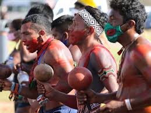
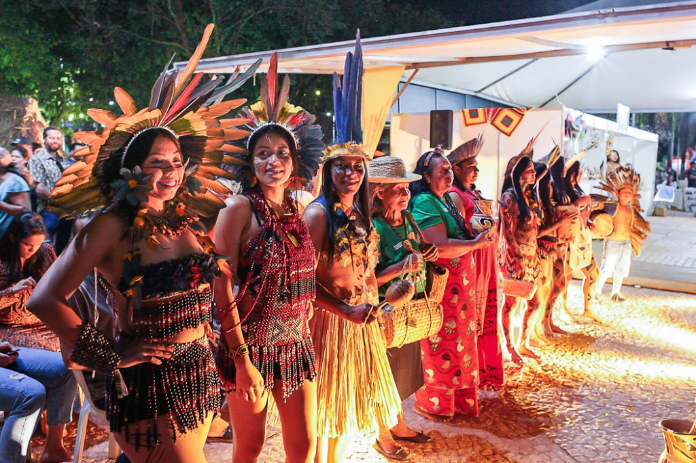
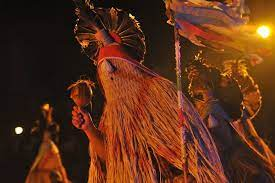

Cultura indigena

Oque é a cultura indigena?
Cultura indígena é o conjunto de valores, conhecimentos, crenças e costumes dos povos nativos do Brasil. Importante destacar que não existe uma única cultura indígena, mas uma enorme diversidade cultural representada por civilizações autônomas, com modos de pensar e agir únicos.

Alimentação dos povos indigenas
A alimentação dos povos indígenas provém basicamente destas atividades: pesca, caça, coleta e agricultura.
A coleta é normalmente tarefa feminina. Dentre os itens coletados, há as nozes, raízes, frutas silvestres e mel.
Aves, macacos, antas, porcos-do-mato, capivaras e tatus são exemplos de animais caçados, seja por armadilhas, zarabatanas ou arco e flecha.
Para conservar a carne, os índios usam a técnica do moquém, que consiste na instalação de uma estrutura de madeira sobre a fogueira. A carne moqueada (ou defumada) é usada em diferentes receitas.
Dentre os itens tradicionalmente cultivados pelos povos indígenas, podemos destacar a mandioca e o milho. Para muitas tribos, a mandioca é a base da alimentação.
.jpeg)
Religião dos povos indigenas
As religiões dos povos indígenas do Brasil são politeístas, cultivam muitas entidades e não há a adoração a uma única divindade. Também não há dogmas ou um conjunto de doutrinas registradas em livros sagrados, como a Bíblia.
Um traço importante da religiosidade dos povos indígenas é a crença em seres sobrenaturais ou espíritos. Essas divindades variam bastante entre as etnias. Os Yanomami, por exemplo, creem na existência de espíritos da floresta (xapiri) que moram no topo das montanhas.
Entre os Tenetehara (conhecidos, no Maranhão, como Guajajara, e no Pará, como Tembé), existe a crença tradicional nos karoara, seres sobrenaturais.

Vestimentas e ornamentos indígenas
O vestuário indígena é bastante variado. Há povos que usam basicamente tangas e cintos. No povo Araweté, por exemplo, os homens tradicionalmente andam nus, com um cordão amarrado ao órgão sexual. Já as mulheres Araweté usam mais itens, como saia, blusa e um pano na cabeça tingido de urucum.
Os povos indígenas também usam diversos ornamentos corporais, como colares, brincos, pulseiras, cocares, adornos de cabelo, braçadeiras, alargadores labiais etc.
Há povos que se enfeitam com penas, como os Tupi. Os índios Bororo, que habitam o Mato Grosso, são conhecidos pela utilização de plumas azuis.
Dentre os inúmeros itens ornamentos usados pelos indígenas brasileiros, podemos citar o botoque, alargador labial e auricular usado tradicionalmente pelos índios Krenak (também chamados de botocudos) e pelos Caiapó.
.jpeg)